Yura, Wakayama: things to do, food and stays
Yura · Wakayama
Yura
Highlighted on the Wakayama map.
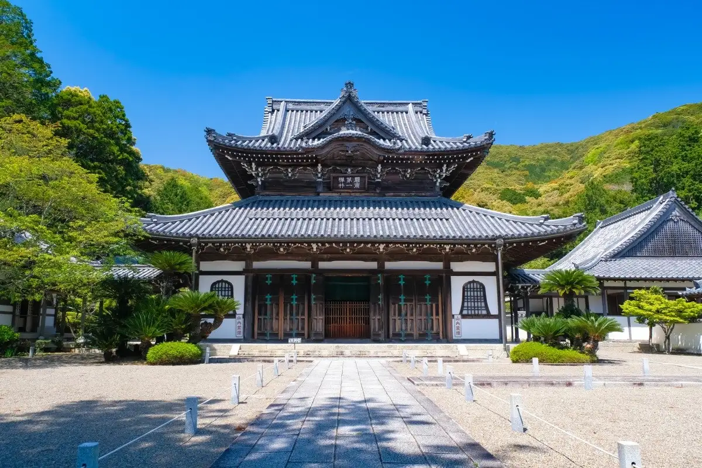
Stay
ＢｉｚＨｏｔｅｌ（ビズホテル） 紀伊由良
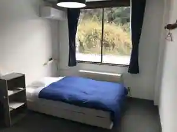
BizHotel(Bizu Hotel) Ki Yura
Hotel in Konokoma, Yura with business travelers.
バンガロー ストロベリーファーム白崎
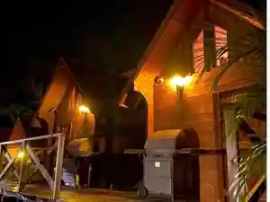
Bangaro Sutoroberifamu Shirasaki
Abosan Shii Ouberuju
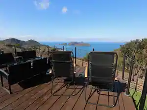
Abosan Shii Ouberuju
Inn in Koromona, Yura with one group per day.
WORKHOBBY和歌山由良
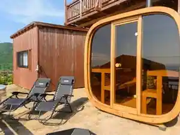
WORKHOBBY Wakayama Yura
Inn in Obiki, Yura with open-air baths and a sauna.
観光旅館美奈都
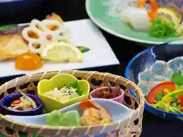
Kanko Ryokan Mina Miyako
with dog 和歌山
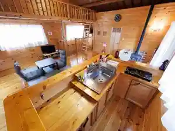
with dog Wakayama
Inn in Obiki, Yura with family-friendly stays.
古民家民宿うしお
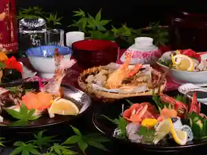
Ko Minka Minshuku Ushio
Family-run minshuku in Kamiya, Yura with one group per day and a renovated traditional house.
久家旅館
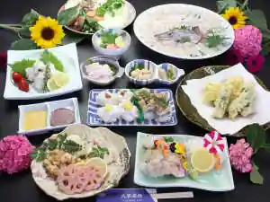
Kuge Ryokan
白崎シーサイドハイツ 白崎荘
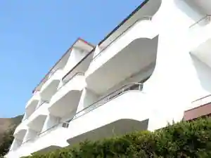
Shirasaki Shisaidohaitsu Shirasaki So
Dining
そば処 わくわく
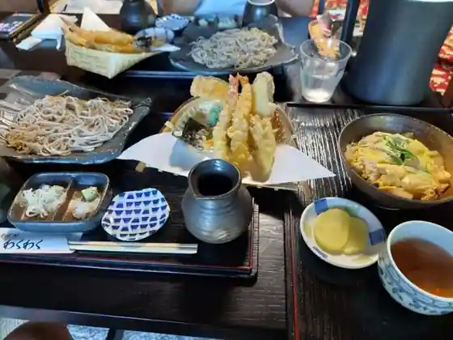
Soba Tokoro Wakuwaku
道の駅 白崎海洋公園
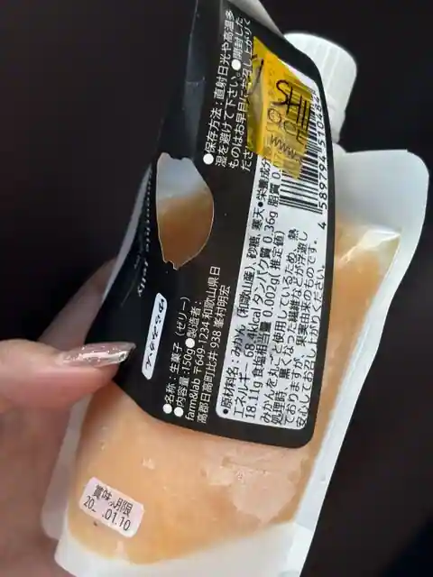
Michi No Eki Shirasaki Kaiyo Koen
BALORICCO
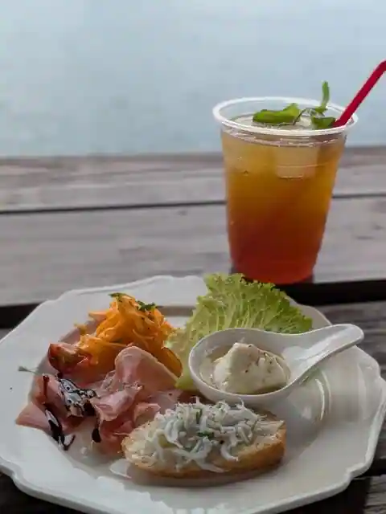
BALORICCO
中華料理 満来軒
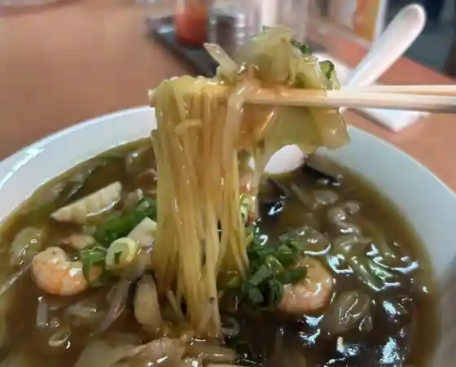
Chukaryori Manrai Ken
平佐館
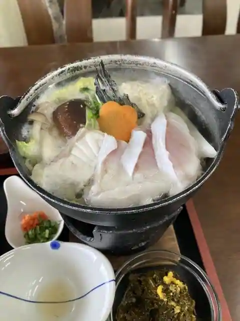
Taira Sa Kan
大川
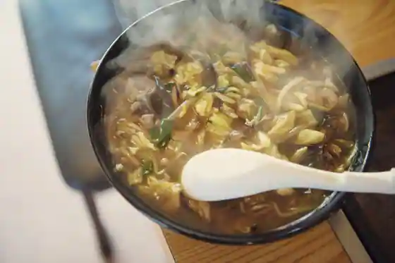
Okawa
和洋食堂しらしょう
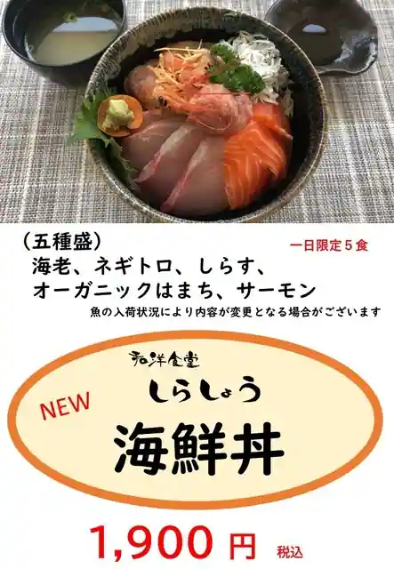
Wayo Shokudo Shirasho
釣楽荘
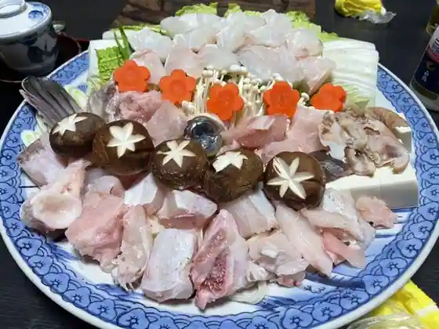
Tsuri Raku So
Fitam
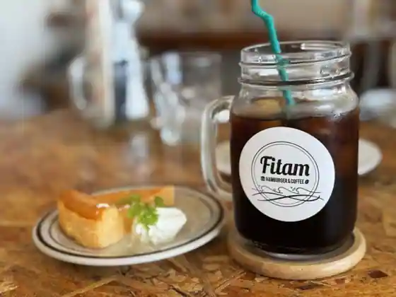
Fitam
錦花堂
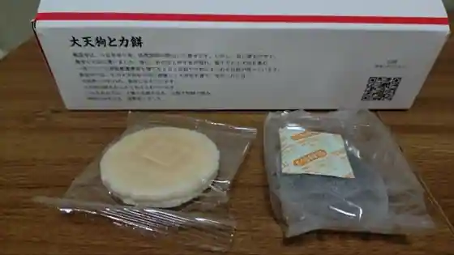
Kinka Do
民宿うしお
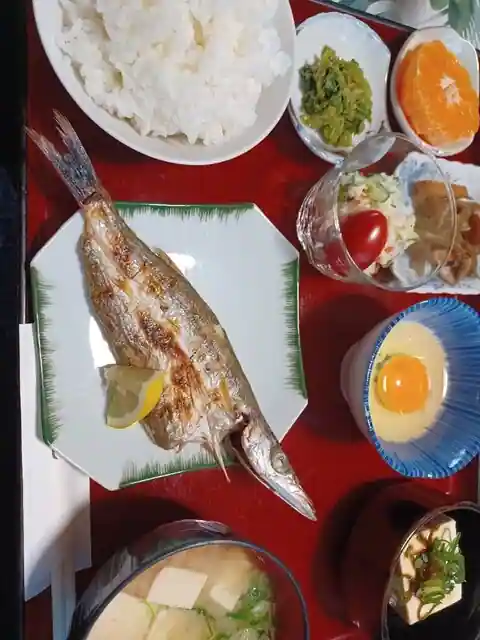
Minshuku Ushio
寺井旅館ハーバービュー
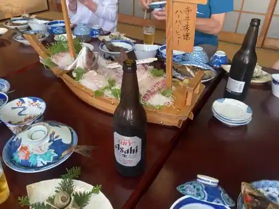
Terai Ryokan Hababyu
ロカンダ コンカ・ドーロ
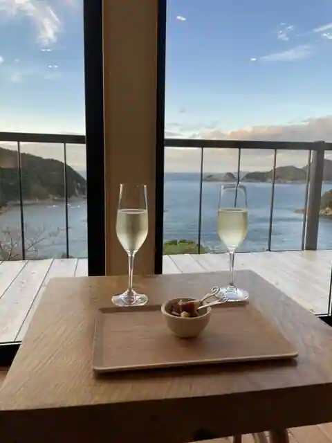
Rokanda Konka Doro
ハヤマヤパンコーボー
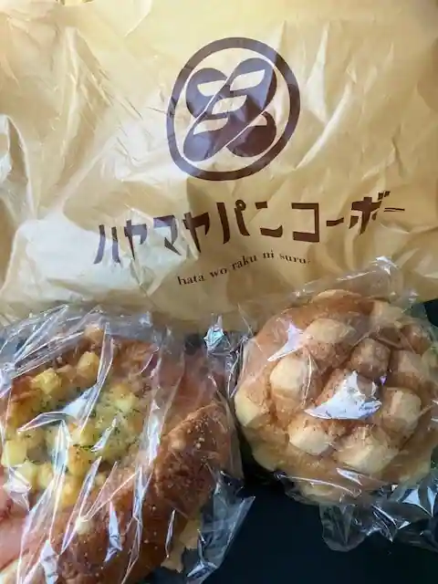
Hayamaya Bakery Kobo
虎丸
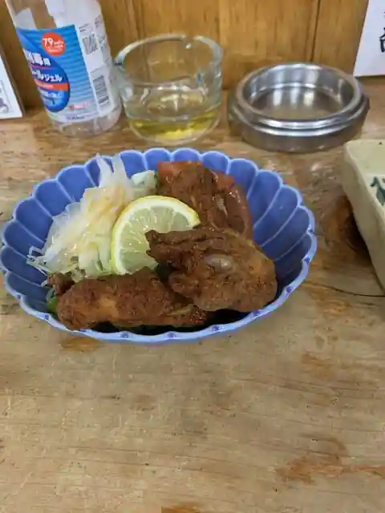
Toramaru
山和
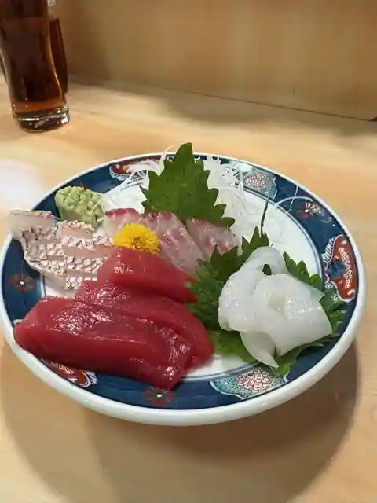
Yama Wa
原長
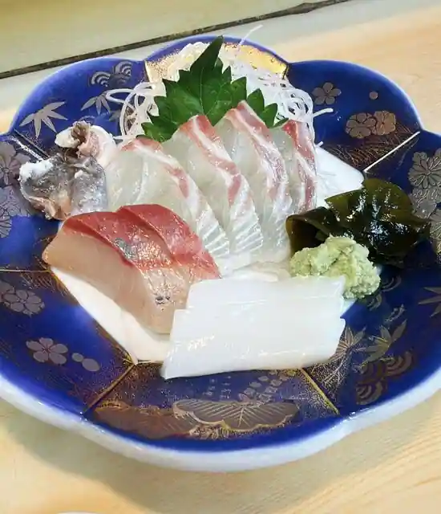
Hara Cho
ソロ
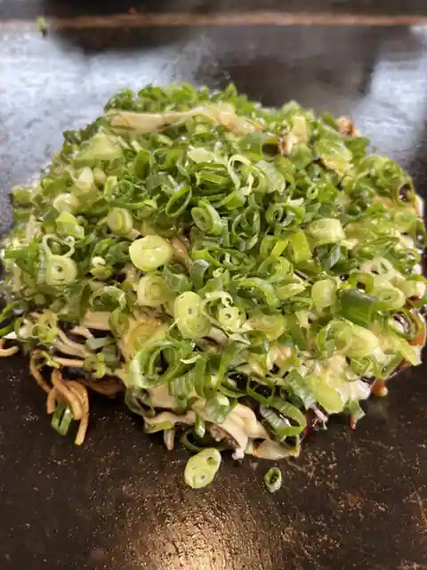
Soro
由楽
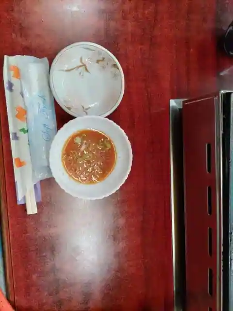
Yu Raku
中島寿司
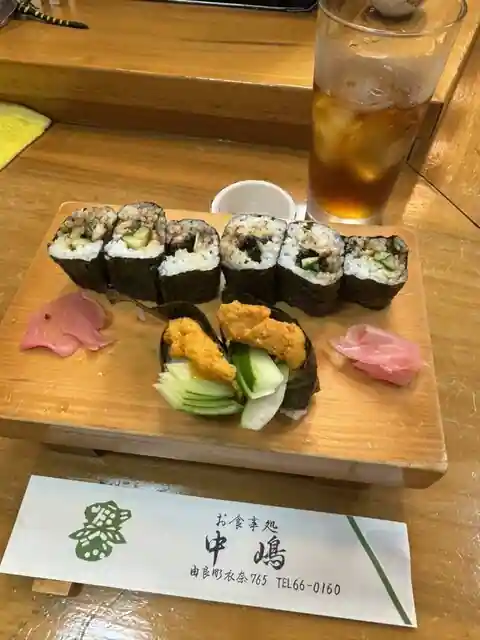
Nakajima Sushi
十八
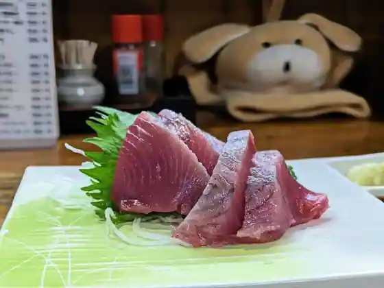
Juhachi
Sights
Shirasaki Kaiyo Park
Totsu I Limestone Cave
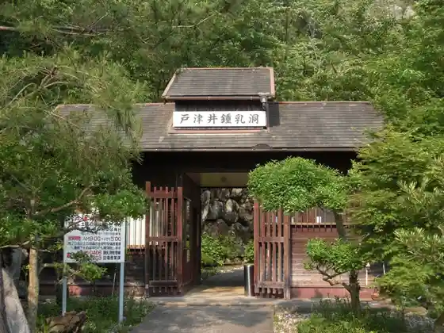
Kokoku Tera
Shirasaki Manyo Park
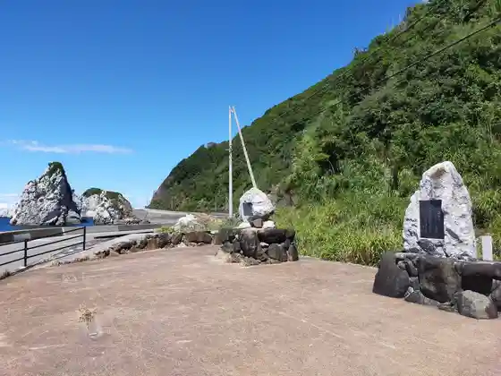